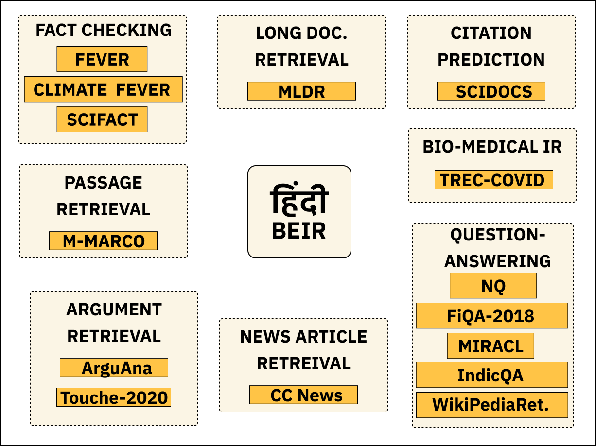
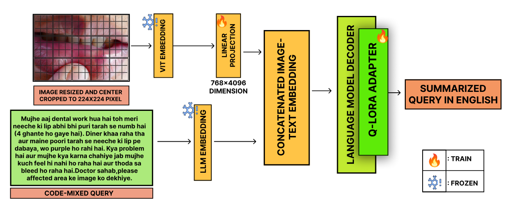
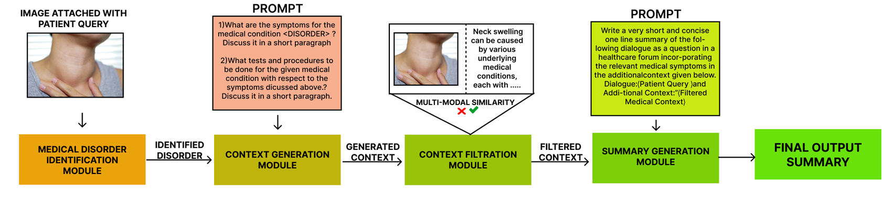

Publications
Hindi-BEIR: A Large Scale Retrieval Benchmark in Hindi
Arkadeep Acharya, Rudra Murthy, Vishwajeet Kumar, Jaydeep Sen.
Given the large number of Hindi speakers worldwide, there is a pressing need for robust and efficient information retrieval systems for Hindi. Despite ongoing research, there is a lack of comprehensive benchmark for evaluating retrieval models in Hindi. To address this gap, we introduce the Hindi version of the BEIR benchmark, which includes a subset of English BEIR datasets translated to Hindi, existing Hindi retrieval datasets, and synthetically created datasets for retrieval. The benchmark is comprised of datasets spanning across distinct tasks. We evaluate state-of-the-art multilingual retrieval models on this benchmark to identify task and domain-specific challenges and their impact on retrieval performance. By releasing this benchmark and a set of relevant baselines, we enable researchers to understand the limitations and capabilities of current Hindi retrieval models, promoting advancements in this critical area.
Exploring the Frontier of Vision-Language Models: A Survey of Current Methodologies and Future Directions
Akash Ghosh, Arkadeep Acharya, Sriparna Saha, Vinija Jain, Aman Chadha.

Large Language Models (LLMs) are primarily adept at processing text, limiting their ability to handle multimodal tasks. To overcome this, Vision-Language Models (VLMs) have emerged, integrating visual and textual data processing. These models are particularly useful for complex tasks such as image captioning and visual question answering. In our survey, we classify VLMs into three categories: models focused on vision-language understanding, models that process multimodal inputs to generate unimodal (textual) outputs, and models capable of both multimodal inputs and outputs. We provide an in-depth analysis of each model, covering their architectures, training datasets, strengths, and limitations. Additionally, we assess VLM performance on various benchmark datasets, offering a comprehensive understanding of the current landscape. Finally, we explore future research directions, identifying areas with the potential for further breakthroughs and innovations in the rapidly advancing field of vision-language integration in AI.
MedSumm: A Multimodal Approach to Summarizing Code-Mixed Hindi-English Clinical Queries
Akash Ghosh, Arkadeep Acharya, Prince Jha, Sriparna Saha, Aniket Gaudgaul, Rajdeep Majumdar, Aman Chadha, Raghav Jain, Setu Sinha, Shivani Agarwal. European Conference on Information Retrieval 2024.
In the healthcare domain, summarizing patient medical questions is vital for enhancing doctor-patient communication and medical decision-making. While medical data has grown in complexity, research has largely focused on text-based methods, neglecting the role of visual cues. Additionally, past efforts have been limited to the English language. This work introduces the task of multimodal medical question summarization for codemixed inputs in low-resource settings. To address this, we present the Multimodal Medical Codemixed Question Summarization (MMCQS) dataset, which combines Hindi-English codemixed medical queries with visual aids to better represent patients’ conditions. We also propose the MedSumm framework, which leverages Large Language Models (LLMs) and Vision-Language Models (VLMs) for this task. Using the MMCQS dataset, our results show that integrating visual information enhances the quality of medical summaries, improving healthcare decision-making and patient understanding. This multimodal approach opens the door for future advancements in personalized, responsive medical care in multilingual, resource-limited environments.
Clipsyntel: Clip and llm synergy for multimodal question summarization in healthcare
Akash Ghosh*, Arkadeep Acharya*, Raghav Jain, Sriparna Saha, Aman Chadha, Setu Sinha. Proceedings of the AAAI Conference on Artificial Intelligence 2024.
In modern healthcare, quickly summarizing medical questions is essential for timely patient care. While most research has focused on text-based methods, this work introduces the Multimodal Medical Question Summarization (MMQS) Dataset, pairing medical queries with visual aids to provide a deeper understanding of patient needs. The MMQS dataset enriches medical question summaries by integrating visual representations with textual data. We also propose a framework leveraging Contrastive Language Image Pretraining (CLIP) and Large Language Models (LLMs) to enhance the summarization process. This framework consists of four key modules: medical disorder identification, relevant context generation, concept filtration, and visually aware summary generation. By combining CLIP's multimodal capabilities with LLMs, we demonstrate how visual cues significantly improve the creation of medically nuanced summaries. This multimodal approach improves healthcare decision-making and fosters a more personalized understanding of patient queries, paving the way for further research in responsive, tailored medical care.
Do Language Models Have a Common Sense regarding Time? Revisiting Temporal Commonsense Reasoning in the Era of Large Language Models?
Raghav Jain, Daivik Sojitra, Arkadeep Acharya, Sriparna Saha, Adam Jatowt, Sandipan Dandapat. Proceedings of the 2023 Conference on Empirical Methods in Natural Language Processing.
Temporal reasoning represents a vital component of human communication and understanding, yet remains an underexplored area within the context of Large Language Models (LLMs). Despite LLMs demonstrating significant proficiency in a range of tasks, a comprehensive, large-scale analysis of their temporal reasoning capabilities is missing. Our paper addresses this gap, presenting the first extensive benchmarking of LLMs on temporal reasoning tasks. We critically evaluate 8 different LLMs across 6 datasets using 3 distinct prompting strategies. Additionally, we broaden the scope of our evaluation by including in our analysis 2 Code Generation LMs. Beyond broad benchmarking of models and prompts, we also conduct a fine-grained investigation of performance across different categories of temporal tasks. We further analyze the LLMs on varying temporal aspects, offering insights into their proficiency in understanding and predicting the continuity, sequence, and progression of events over time. Our findings reveal a nuanced depiction of the capabilities and limitations of the models within temporal reasoning, offering a comprehensive reference for future research in this pivotal domain.
LLM Based Generation of Item-Description for Recommendation System.
Arkadeep Acharya, Brijraj Singh, Naoyuki Onoe. Proceedings of the 17th ACM Conference on Recommender Systems.
The description of an item plays a pivotal role in providing concise and informative summaries to captivate potential viewers and is essential for recommendation systems. Traditionally, such descriptions were obtained through manual web scraping techniques, which are time-consuming and susceptible to data inconsistencies. In recent years, Large Language Models (LLMs), such as GPT-3.5, and open source LLMs like Alpaca have emerged as powerful tools for natural language processing tasks. In this paper, we have explored how we can use LLMs to generate detailed descriptions of the items. To conduct the study, we have used the MovieLens 1M dataset comprising movie titles and the Goodreads Dataset consisting of names of books and subsequently, an open-sourced LLM, Alpaca, was prompted with few-shot prompting on this dataset to generate detailed movie descriptions considering multiple features like the names of the cast and directors for the ML dataset and the names of the author and publisher for the Goodreads dataset. The generated description was then compared with the scraped descriptions using a combination of Top Hits, MRR, and NDCG as evaluation metrics. The results demonstrated that LLM-based movie description generation exhibits significant promise, with results comparable to the ones obtained by web-scraped descriptions.